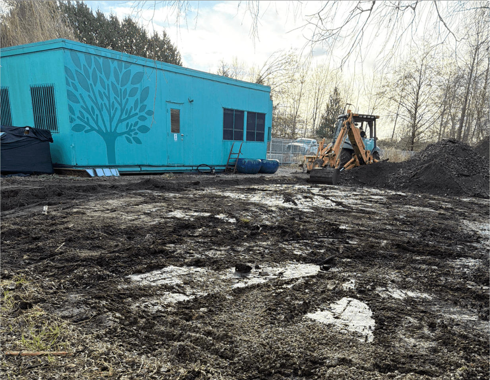
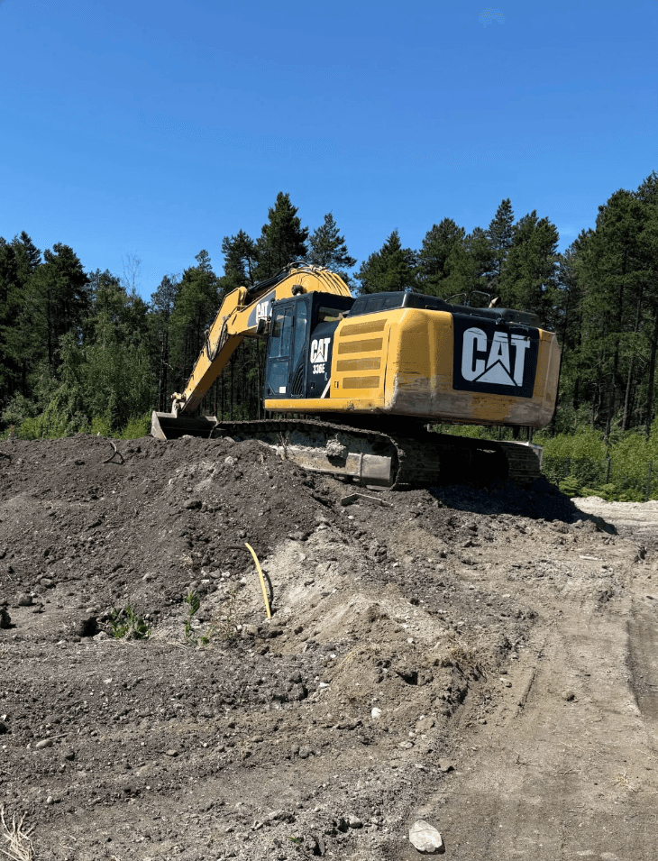

Our Projects
A selection of recent work across municipal infrastructure, agricultural compliance, and land development in British Columbia.
A selection of recent work across municipal infrastructure, agricultural compliance, and land development in British Columbia.

A complex rezoning and soil deposit application on an environmentally sensitive site in Richmond requiring multi-stakeholder coordination.
Our RoleLed the rezoning and soil deposit application, coordinated geotechnical, drainage, and ecological reports, managed stakeholder meetings and ensured fill and grading plans respected riparian setbacks and future road allowances.
Deliverables
A nursery needed guidance on greenhouse construction and soil improvements on challenging low-pH peat soils, plus regulatory approvals.
Our RoleAdvised on greenhouse design and soil improvements for low-pH peat-based soils, handled soil removal applications and compliance issues, coordinated with municipal and ALC contacts to streamline permitting.
Deliverables
A temple property required soil remediation on its farmland to resolve compliance issues with the city.
Our RoleOversaw soil remediation on the temple's farmland, conducted final site inspection and drafted a closure report, liaised with city officials to confirm compliance and assist with bond release.
Deliverables
A Richmond farm required boundary realignment within the Agricultural Land Reserve, involving ALC and municipal coordination.
Our RolePrepared an agricultural rationale memo for parcel boundary realignment, represented the client with the ALC and city staff, coordinated permitting and compliance deadlines for soil placement and site modifications.
Deliverables
The City of Colwood needed professional review and advisory support for an Agricultural Land Reserve exclusion application.
Our RoleReviewed the land capability assessment and summarized regulatory context and findings, provided briefing notes and recommendations for the ALR exclusion, assisted staff with council report preparation.
Deliverables
The City of Coquitlam needed soil analysis and root-zone specifications for a new sports field build.
Our RoleConducted soil sampling and root-zone analysis, recommended and vetted sports-field root-zone blends for durability and drainage, reviewed gradation tests and provided stamped specifications to guide construction.
DeliverablesBook a free consultation today — we’ll respond within one business day.
Book a Consultation